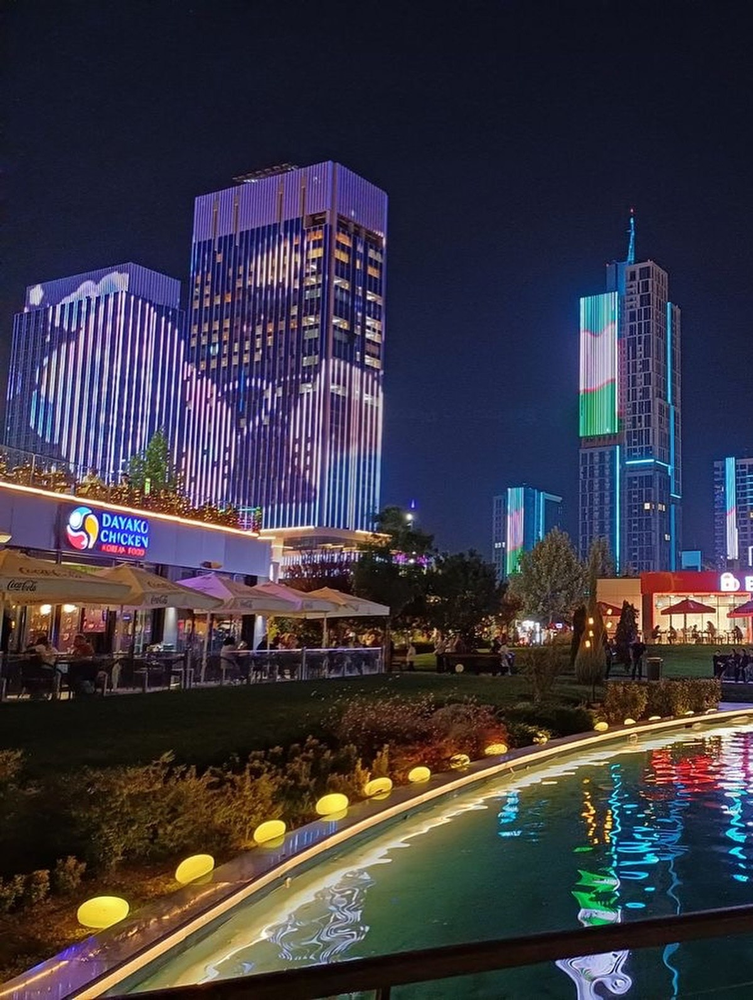
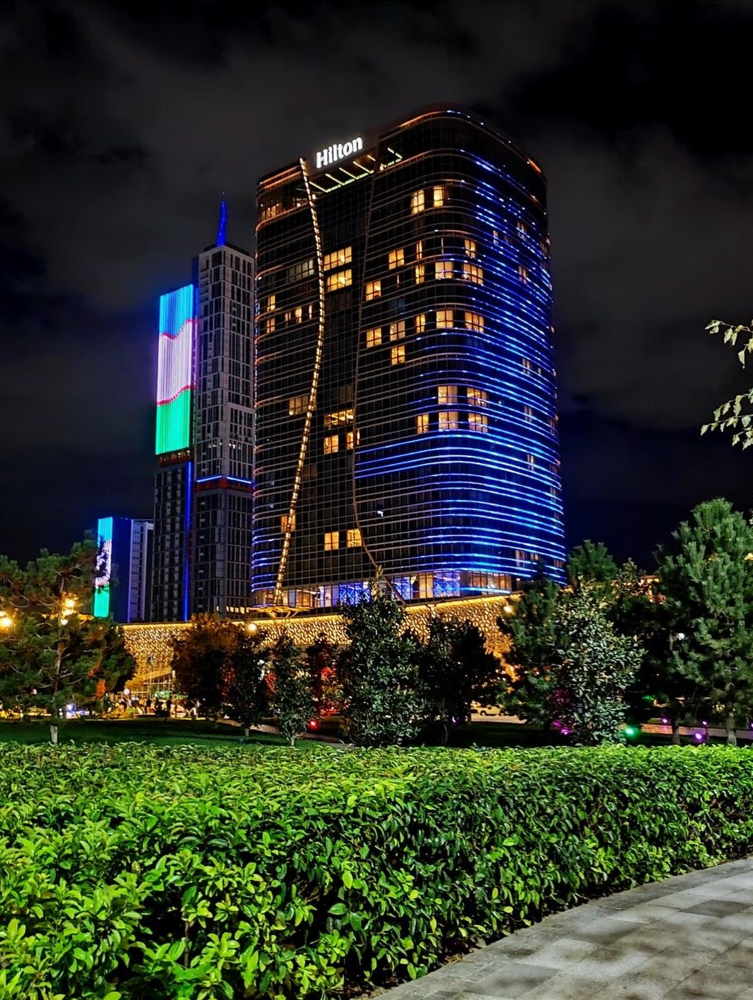
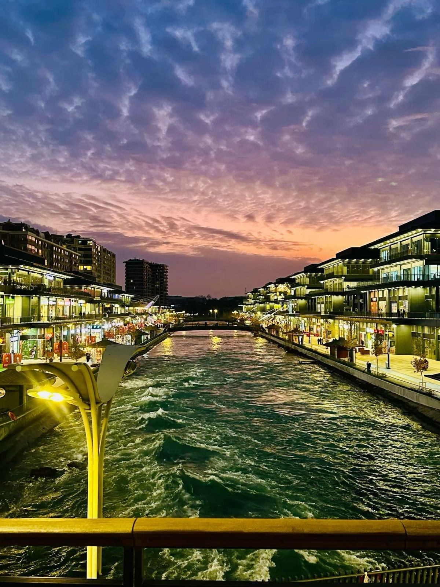
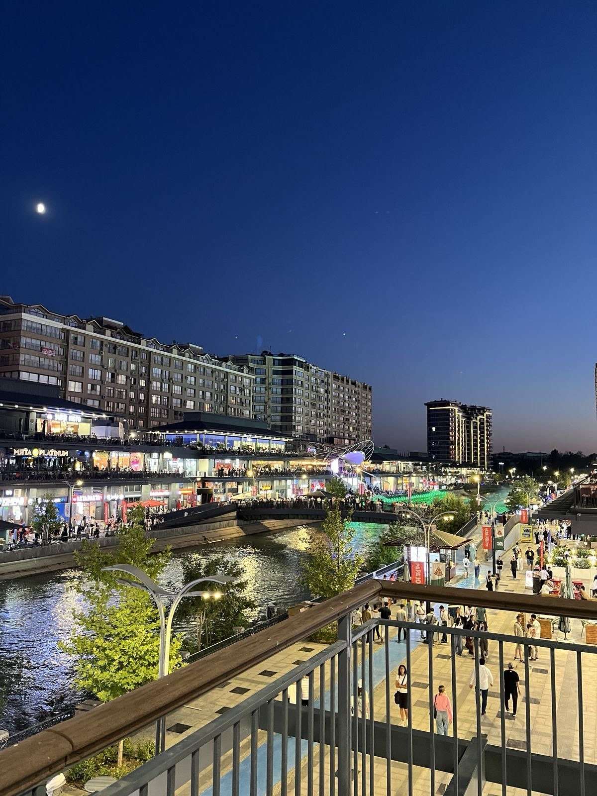

Tashkent
Tashkent, Uzbekistan · May 18–20, 2026




Evenings along the canal, lit-up towers, and the city at night.
Tashkent, Uzbekistan · May 18–20, 2026




Evenings along the canal, lit-up towers, and the city at night.